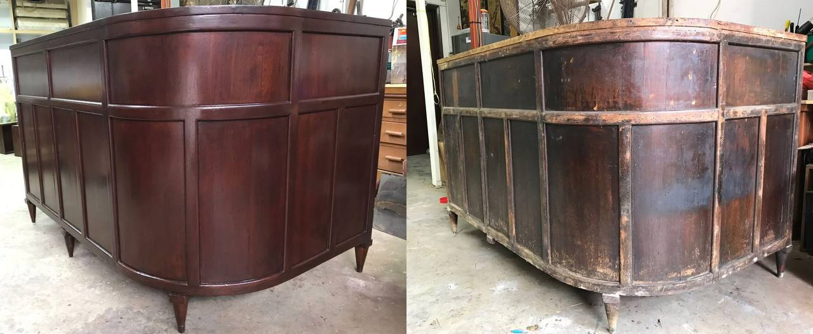
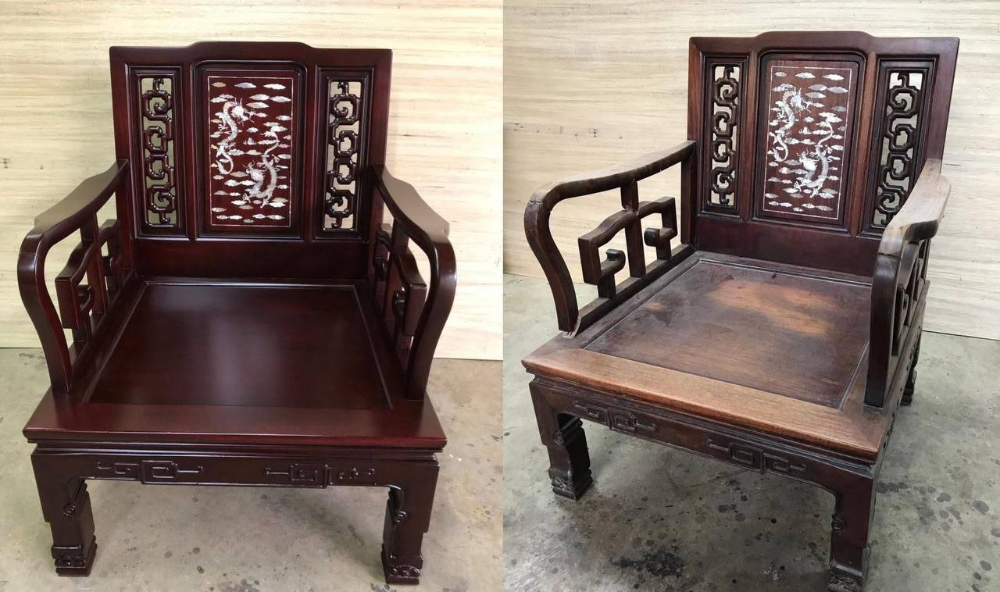
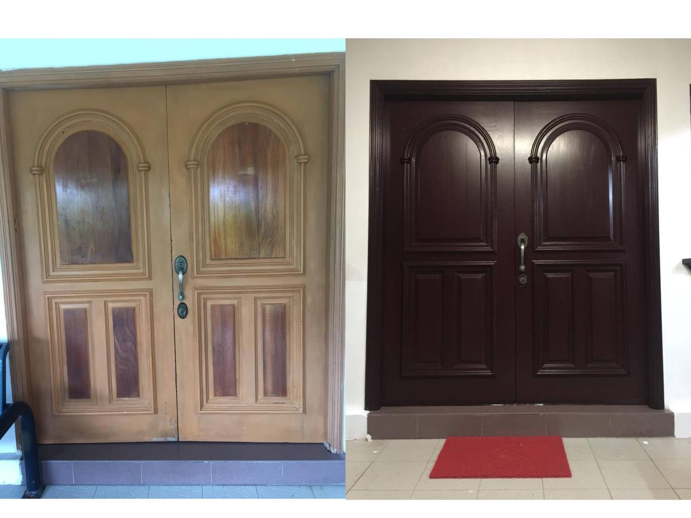
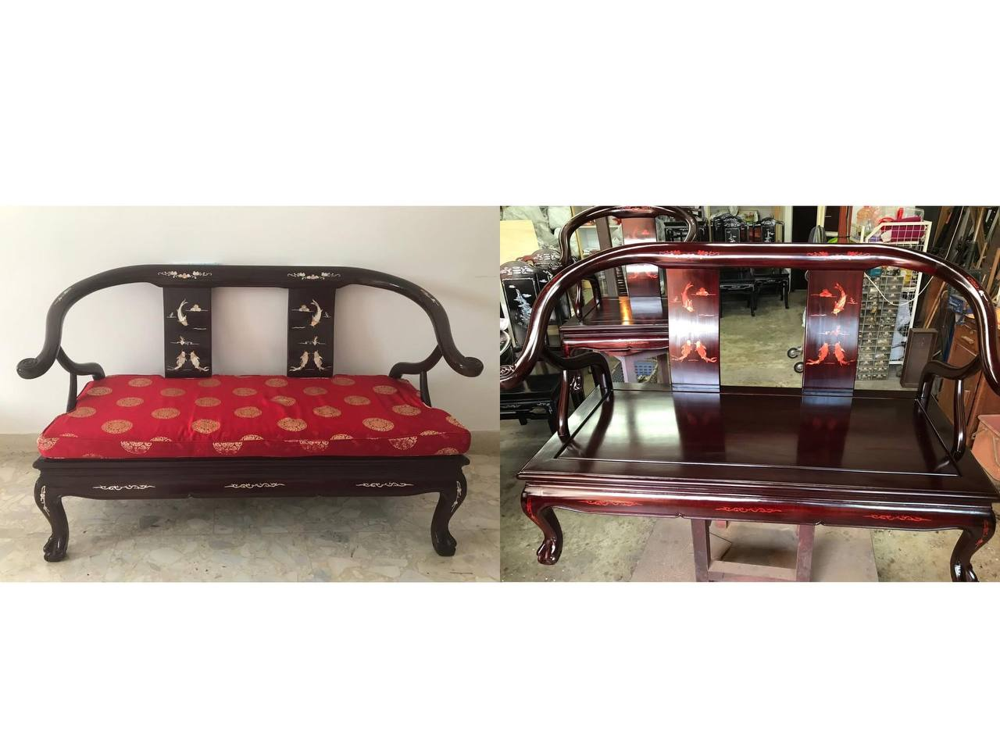
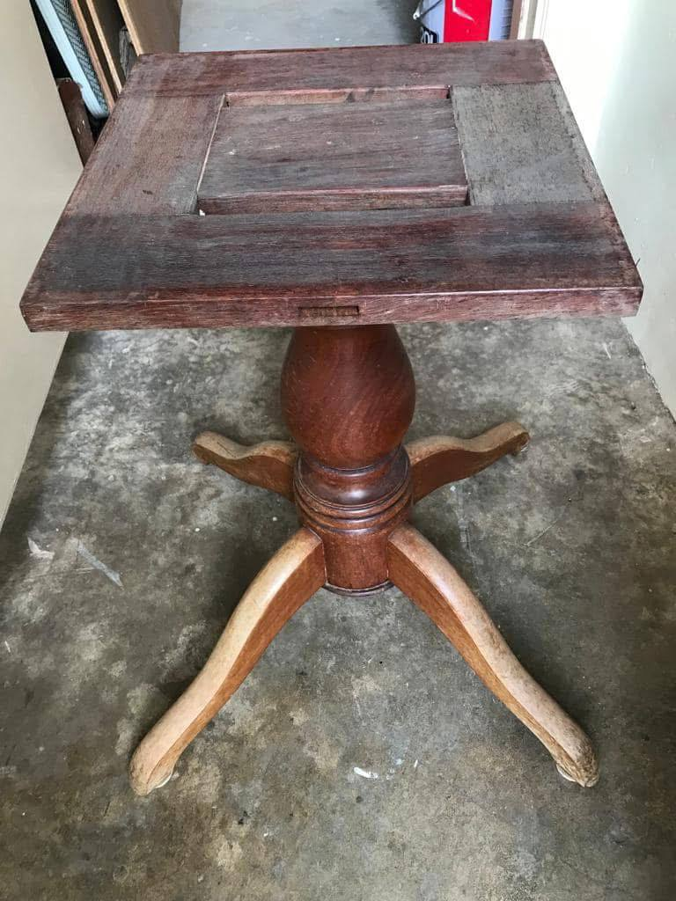

Since 1985, Meng Antique has served Singapore's antique furniture scene — first from selling of rosewood and huanghuali pieces, and today as a dedicated restoration workshop under Mr Tan.
Structural repair, re-lacquering, veneer & inlay work.
Honest valuations built on decades of hands-on experience.




Send Mr Tan a photo over WhatsApp for a free, no-obligation quote.